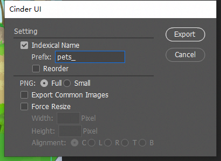
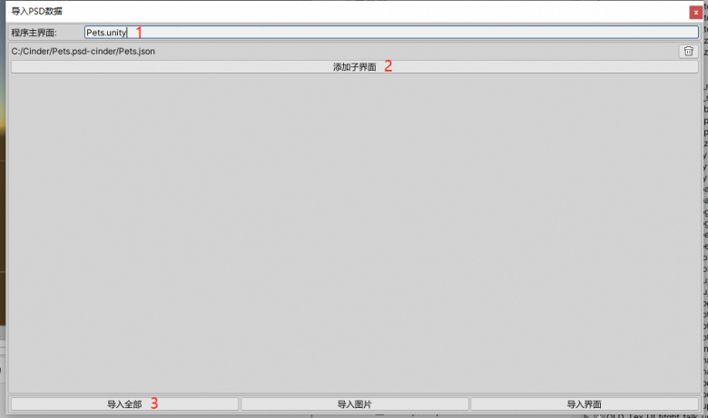
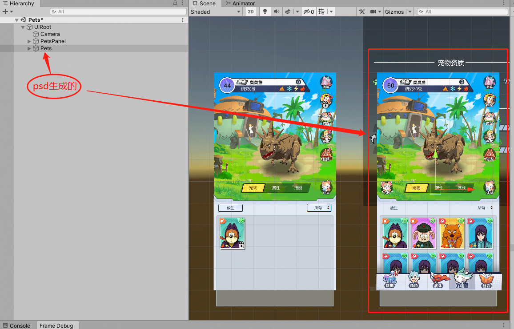
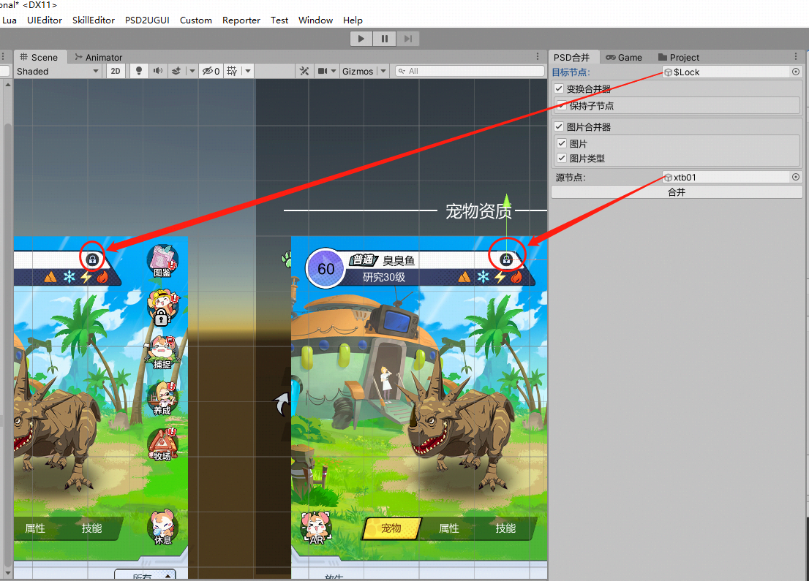

新版UI替换流程
1.美术
(1)通用资源上传SVN
(2)导出psd
完成psd之后,美术点击导出脚本，选中IndexicalName,填上Prefix(导出图片名字的前缀),最后点击Export。

最后把导出生成的”xxx.psd-cinder”目录打包发给程序。
2.程序
(1) 导入psd
选择PSD2UGUI -> 导入PSd数据，弹出下图界面。按照图上标机顺序操作。

导入成功后可以看到下图，选择的程序主界面上增加了由psd生成的UI结构。

“xxx.psd-cinder”目录下assets资源的私有图片会放入到”Cinder\Assets\Daisy\RawResources\UI\Image”下界面对应的目录下。
程序修改前需要跟美术一起设置公共图片,改完后需要将放在私有图片目录下的公共图片删除。
(2) 合并控件
从程序创建的UI结构中选中一个目标节点,从由psd生成的UI结构一个源节点,点击合并。(选中控件建议使用基础工具栏中的Rect Tool)

(3) 合并选项
通用合并器
- 变换合并器: 勾选后合并会将源节点的
大小和坐标合并至目标节点;- 保持子节点: 勾选后合并子节点的位置和大小不随父节点变化而变化;
文本合并器
- 文本内容: 勾选后合并会将源节点的
Text(文本内容)合并至目标节点; - 字体: 勾选后合并会将源节点的
Font(字体)合并至目标节点; - 字号大小: 勾选后合并会将源节点的
FontSize(字号大小)合并至目标节点; - 文字颜色: 勾选后合并会将源节点的
Color(文字颜色)合并至目标节点; - 水平溢出: 勾选后合并会将源节点的
Horizontal Overflow(水平溢出)合并至目标节点; - 垂直溢出: 勾选后合并会将源节点的
Vertical Overflow(垂直溢出)合并至目标节点;
- 文本内容: 勾选后合并会将源节点的
图片合并器
- 图片: 勾选后合并会将源节点的
Source Image(图片资源sprite)合并至目标节点; - 图片类型: 勾选后合并会将源节点的
Image Type(图片类型type)合并至目标节点;
- 图片: 勾选后合并会将源节点的
文本合并器【TextMeshPro】
- 文本内容: 勾选后合并会将源节点的
Text(文本内容)合并至目标节点; - 字体: 勾选后合并会将源节点的
Font(字体)合并至目标节点; - 字号大小: 勾选后合并会将源节点的
FontSize(字号大小)合并至目标节点; - 文字颜色: 勾选后合并会将源节点的
Color(文字颜色)合并至目标节点;
- 文本内容: 勾选后合并会将源节点的
(4) 注意事项
- 程序在
750*1334完成所有控件合并后,需要把分辨率调整为750*1624后查看UI布局是否正常,如有问题需要调整,保证在750*1334和750*1624分辨率下都是正常才行。
- 变换合并器: 勾选后合并会将源节点的